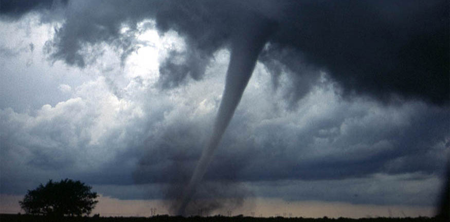
- Describe uniform circular motion.
- Explain non-uniform circular motion.
- Calculate angular acceleration of an object.
- Observe the link between linear and angular acceleration.
Uniform Circular Motion and Gravitationdiscussed only uniform circular motion, which is motion in a circle at constant speed and, hence, constant angular velocity. Recall that angular velocity \(\omega\) was defined as the time rate of change of angle \(\theta\).
where \(\theta\) is the angle of rotation as seen in Figure . The relationship between angular velocity \(\omega\) and linear velocity \(v\) was also defined inRotation Angle and Angular Velocityas
where \(r\) is the radius of curvature, also seen in Figure . According to the sign convention, the counter clockwise direction is considered as positive direction and clockwise direction as negative
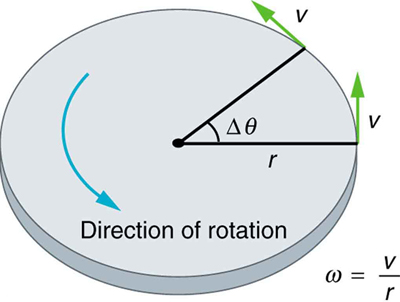
Angular velocity is not constant when a skater pulls in her arms, when a child starts up a merry-go-round from rest, or when a computer’s hard disk slows to a halt when switched off. In all these cases, there is anangular acceleration, in which \(\omega\) changes. The faster the change occurs, the greater the angular acceleration. Angular acceleration \(\alpha\) is defined as the rate of change of angular velocity. In equation form, angular acceleration is expressed as follows:
\[\alpha = \dfrac{\Delta \omega}{\Delta t},\] where \(Δω\) is thechange in angular velocityand \(Δt\) is the change in time. The units of angular acceleration are (rad/s)/s, or rad/\(s^2\). If \(ω\) increases, then \(α\) is positive. If \(ω\) decreases, then \(α\) is negative.
Suppose a teenager puts her bicycle on its back and starts the rear wheel spinning from rest to a final angular velocity of 250 rpm in 5.00 s. (a) Calculate the angular acceleration in \(rad/s^2\). (b) If she now slams on the brakes, causing an angular acceleration of –87.3 \(rad/s^2\), how long does it take the wheel to stop?
The angular acceleration can be found directly from its definition in \(α=\frac{Δω}{Δt}\) because the final angular velocity and time are given. We see that \(Δω\) is 250 rpm and \(Δt\) is 5.00 s.
Entering known information into the definition of angular acceleration, we get
Because \(Δω\) is in revolutions per minute (rpm) and we want the standard units of \(rad/s^2\) for angular acceleration, we need to convert \(Δω\) from rpm to rad/s:
Entering this quantity into the expression for \(α\), we get
In this part, we know the angular acceleration and the initial angular velocity. We can find the stoppage time by using the definition of angular acceleration and solving for Δt, yielding
Here the angular velocity decreases from 26.2 rad/s (250 rpm) to zero, so that \(Δω\) is –26.2 rad/s, and α is given to be –87.3 \(rad/s^2\). Thus,
Note that the angular acceleration as the girl spins the wheel is small and positive; it takes 5 s to produce an appreciable angular velocity. When she hits the brake, the angular acceleration is large and negative. The angular velocity quickly goes to zero. In both cases, the relationships are analogous to what happens with linear motion. For example, there is a large deceleration when you crash into a brick wall—the velocity change is large in a short time interval.
If the bicycle in the preceding example had been on its wheels instead of upside-down, it would first have accelerated along the ground and then come to a stop. This connection between circular motion and linear motion needs to be explored. For example, it would be useful to know how linear and angular acceleration are related. In circular motion, linear acceleration istangentto the circle at the point of interest, as seen in Figure . Thus, linear acceleration is calledtangential acceleration\(a_t\).
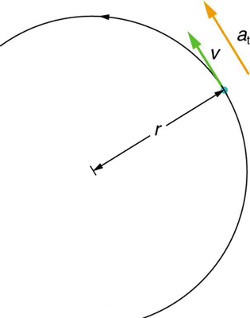
Figure :In circular motion, linear acceleration \(a\), occurs as the magnitude of the velocity changes: \(a\) is tangent to the motion. In the context of circular motion, linear acceleration is also called tangential acceleration \(a_t\).
Linear or tangential acceleration refers to changes in the magnitude of velocity but not its direction. We know from Uniform Circular Motion and Gravitation that in circular motion centripetal acceleration, ac, refers to changes in the direction of the velocity but not its magnitude. An object undergoing circular motion experiences centripetal acceleration, as seen in Figure . Thus, \(a_t\) and \(a_c\) are perpendicular and independent of one another. Tangential acceleration \(a_t\) is directly related to the angular acceleration \(α\) and is linked to an increase or decrease in the velocity, but not its direction.
![In the figure, a semicircle is drawn, with its radius r, shown here as a line segment. The anti-clockwise motion of the circle is shown with an arrow on the path of the circle. Tangential velocity vector, v, of the point, which is on the meeting point of radius with the circle, is shown as a green arrow and the linear acceleration, a sub t is shown as a yellow arrow in the same direction along v. The centripetal acceleration, a sub c, is also shown as a yellow arrow drawn perpendicular to a sub t, toward the direction of the center of the circle. A label in the figures states a sub t affects magnitude and a sub c affects direction.](images/ch10/fig10-5-in-the-figure-a-semicircle-is-drawn-with.jpg)
Now we can find the exact relationship between linear acceleration \(a_t\) and angular acceleration \(α\). Because linear acceleration is proportional to a change in the magnitude of the velocity, it is defined (as it was in One-Dimensional Kinematics) to be
For circular motion, note that \(v=rω\), so that
The radius r is constant for circular motion, and so \(Δ(rω)=r(Δω)\). Thus,
By definition, \(α=\frac{Δω}{Δt}\). Thus,
These equations mean that linear acceleration and angular acceleration are directly proportional. The greater the angular acceleration is, the larger the linear (tangential) acceleration is, and vice versa. For example, the greater the angular acceleration of a car’s drive wheels, the greater the acceleration of the car. The radius also matters. For example, the smaller a wheel, the smaller its linear acceleration for a given angular acceleration \(α\).
Exercise : Calculating the Angular Acceleration of a Motorcycle Wheel
A powerful motorcycle can accelerate from 0 to 30.0 m/s (about 108 km/h) in 4.20 s. What is the angular acceleration of its 0.320-m-radius wheels? (SeeFigure.)
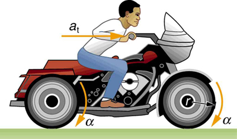
We are given information about the linear velocities of the motorcycle. Thus, we can find its linear acceleration \(a_t\). Then, the expression \(α=\frac{a_t}{r}\) can be used to find the angular acceleration.
The linear acceleration is
We also know the radius of the wheels. Entering the values for \(a_t\) and \(r\) into \(α=\frac{a_t}{r}\), we get
Units of radians are dimensionless and appear in any relationship between angular and linear quantities.
So far, we have defined three rotational quantities— \(θ, ω,\) and \(α\). These quantities are analogous to the translational quantities \(x, v,\) and \(a\). Table displays rotational quantities, the analogous translational quantities, and the relationships between them.
| Rotational | Translational | Relationship |
|---|---|---|
| \(θ\) | \(x\) | \(θ=\frac{x}{r}\) |
| \(ω\) | \(v\) | \(ω=\frac{v}{r}\) |
| \(α\) | \(a\) | \(α=\frac{a_t}{r}\) |
MAKING CONNECTIONS: TAKE-HOME EXPERIMENT
Sit down with your feet on the ground on a chair that rotates. Lift one of your legs such that it is unbent (straightened out). Using the other leg, begin to rotate yourself by pushing on the ground. Stop using your leg to push the ground but allow the chair to rotate. From the origin where you began, sketch the angle, angular velocity, and angular acceleration of your leg as a function of time in the form of three separate graphs. Estimate the magnitudes of these quantities.
Exercise
Angular acceleration is a vector, having both magnitude and direction. How do we denote its magnitude and direction? Illustrate with an example.
The magnitude of angular acceleration is \(α\) and its most common units are \(rad/s^2\). The direction of angular acceleration along a fixed axis is denoted by a + or a – sign, just as the direction of linear acceleration in one dimension is denoted by a + or a – sign. For example, consider a gymnast doing a forward flip. Her angular momentum would be parallel to the mat and to her left. The magnitude of her angular acceleration would be proportional to her angular velocity (spin rate) and her moment of inertia about her spin axis.
PHET EXPLORATIONS: LADYBUG REVOLUTION
Join theLadybug Revolutionin an exploration of rotational motion. Rotate the merry-go-round to change its angle, or choose a constant angular velocity or angular acceleration. Explore how circular motion relates to the bug's x,y position, velocity, and acceleration using vectors or graphs.
📖 OpenStax College Physics, Section 10.1. openstax.org · CC BY 4.0
- Observe the kinematics of rotational motion.
- Derive rotational kinematic equations.
- Evaluate problem solving strategies for rotational kinematics.
Just by using our intuition, we can begin to see how rotational quantities like \(\theta, \omega\) and \(\alpha\) are related to one another. For example, if a motorcycle wheel has a large angular acceleration for a fairly long time, it ends up spinning rapidly and rotates through many revolutions. In more technical terms, if the wheel’s angular acceleration \(\alpha\) is large for a long period of time \(t\) then the final angular velocity \(\omega\) and angle of rotation \(\theta\) are large. The wheel’s rotational motion is exactly analogous to the fact that the motorcycle’s large translational acceleration produces a large final velocity, and the distance traveled will also be large.Kinematics is the description of motion. Thekinematics of rotational motiondescribes the relationships among rotation angle, angular velocity, angular acceleration, and time. Let us start by finding an equation relating \(\omega, \alpha\), and \(t\). To determine this equation, we recall a familiar kinematic equation for translational, or straight-line, motion: \[v = v_0 + at \, (constant \, a)\] Note that in rotational motion \(a = a_t\), and we shall use the symbol \(a\) for tangential or linear acceleration from now on. As in linear kinematics, we assume \(a\) is constant, which means that angular acceleration \(\alpha\) is also a constant, because \(a = r\alpha\). Now, let us substitute \(v = r\omega\) and \(a = r\alpha\) into the linear equation above:
The radius \(r\) cancels in the equation, yielding \[\omega = \omega_o + at \, (constant \, a),\] where \(\omega_o\) is the initial angular velocity. This last equation is akinematic relationshipamong \(\omega, \alpha\), and \(t\) - that is, it describes their relationship without reference to forces or masses that may affect rotation. It is also precisely analogous in form to its translational counterpart.
Kinematics for rotational motion is completely analogous to translational kinematics, first presented inOne-Dimensional Kinematics. Kinematics is concerned with the description of motion without regard to force or mass. We will find that translational kinematic quantities, such as displacement, velocity, and acceleration have direct analogs in rotational motion.
Starting with the four kinematic equations we developed inOne-Dimensional Kinematics, we can derive the following four rotational kinematic equations (presented together with their translational counterparts):
| Rotational | Translational | |
|---|---|---|
| \(\theta = \overline{\omega} t\) | \(x = \overline{v}t\) | |
| \(\omega = \omega_o + \alpha t\) | \(v = v_o +at\) | \((constant \, \alpha, a)\) |
| \(\Theta = \omega_ot + \frac{1}{2}\alpha t^2\) | \(x = v_0t + \frac{1}{2}at^2\) | \((constant \, \alpha, a)\) |
| \(\omega^2 = \omega_o^2 + 2\alpha \theta\) | \(v^2 = v_0^2 + 2 ax\) | \((constant \, \alpha, a)\) |
In these equations, the subscript 0 denotes initial values (\(\theta_0, x_0\) and \(t_0\) are initial values), and the average angular velocity \(overline{\omega}\) and average velocity \(\overline{v}\) are defined as follows:
The equations given above in Table can be used to solve any rotational or translational kinematics problem in which \(a\) and \(\alpha\) are constant.
Problem-Solving Strategy for Rotational Kinematics
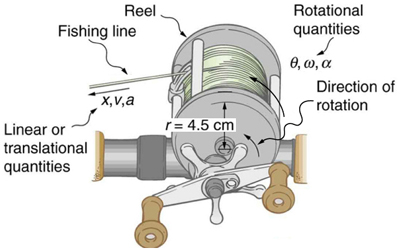
A deep-sea fisherman hooks a big fish that swims away from the boat pulling the fishing line from his fishing reel. The whole system is initially at rest and the fishing line unwinds from the reel at a radius of 4.50 cm from its axis of rotation. The reel is given an angular acceleration of \(110 \, rad/s^2\) for 2.00 s as seen in Figure 10.3.1.
In each part of this example, the strategy is the same as it was for solving problems in linear kinematics. In particular, known values are identified and a relationship is then sought that can be used to solve for the unknown.
Here \(\alpha\) and \(t\) are given and \(\omega\) needs to be determined. The most straightforward equation to use is \(\omega = \omega_0 + \alpha t\) because the unknown is already on one side and all other terms are known. That equation states that
We are also given that \(\omega_0 = 0\) (it starts from rest), so that
Now that \(\omega\) is known, the speed \(v\) can most easily be found using the relationship \[v = r\omega,\] where the radius \(r\) ofthe reel is given to be 4.50 cm; thus, \[ v = (0.0450 \, m)(220 \, rad/s) = 9.90 \, m/s.\] Note again that radians must always be used in any calculation relating linear and angular quantities. Also, because radians are dimensionless, we have \(m \times rad = m\).
Here, we are asked to find the number of revolutions. Because \(1\space rev = 2\pi \, rad\), we can find the number of revolutions by finding \(\theta\) in radians. We are given \(\alpha\) and \(t\), and we know \(\omega_o\) is zero, so that \(\theta\) can be obtained using \(\theta = \omega_0t + \frac{1}{2}\alpha t^2\).
Converting radians to revolutions gives \[\theta = (220 \, rad)\dfrac{1 \, rev}{2\pi \, rad} = 35.0 \, rev.\]
The number of meters of fishing line is \(x\) which can be obtained through its relationship with \(\theta\).
This example illustrates that relationships among rotational quantities are highly analogous to those among linear quantities. We also see in this example how linear and rotational quantities are connected. The answers to the questions are realistic. After unwinding for two seconds, the reel is found to spin at 220 rad/s, which is 2100 rpm. (No wonder reels sometimes make high-pitched sounds.) The amount of fishing line played out is 9.90 m, about right for when the big fish bites.
Now let us consider what happens if the fisherman applies a brake to the spinning reel, achieving an angular acceleration of - \(300 \, rad/s^2\). How long does it take the reel to come to a stop?
We are asked to find the time for the reel to come to a stop. The initial and final conditions are different from those in the previous problem, which involved the same fishing reel. Now we see that the initial angular velocity is \(\omega_0 = 220 \, rad/s\) and the final angular velocity \(\omega\) is zero. The angular acceleration is given to be \(\alpha = - 300 \, rad/s^2.\) Examining the available equations, we see all quantities buttare known in \(\omega = \omega_0 + \alpha t\), making it easiest to use this equation.
The equation states \[\omega = \omega_0 + \alpha t.\]
We solve the equation algebraically fort, and then substitute the known values as usual, yielding
Note that care must be taken with the signs that indicate the directions of various quantities. Also, note that the time to stop the reel is fairly small because the acceleration is rather large. Fishing lines sometimes snap because of the accelerations involved, and fishermen often let the fish swim for a while before applying brakes on the reel. A tired fish will be slower, requiring a smaller acceleration.
Large freight trains accelerate very slowly. Suppose one such train accelerates from rest, giving its 0.350-m-radius wheels an angular acceleration of \(0.250 \, rad/s^2\). After the wheels have made 200 revolutions (assume no slippage): (a) How far has the train moved down the track? (b) What are the final angular velocity of the wheels and the linear velocity of the train?
In part (a), we are asked to find \(x\), and in (b) we are asked to find \(\omega\) and \(v\). We are given the number of revolutions \(\theta\), the radius of the wheels \(r\), and the angular accelerationn\(\alpha\).
The distance \(x\) is very easily found from the relationship between distance and rotation angle:
Solving this equation for \(x\) yields \[x = r\theta.\]
Before using this equation, we must convert the number of revolutions into radians, because we are dealing with a relationship between linear and rotational quantities:
Now we can substitute the known values into \(x = r\theta\) to find the distance the train moved down the track:
We cannot use any equation that incorporates \(t\) to find \(\omega\), because the equation would have at least two unknown values. The equation \(\omega^2 = \omega_0^2 + 2\alpha \theta\) will work, because we know the values for all variables except \(\omega\).
Taking the square root of this equation and entering the known values gives
We can find the linear velocity of the train, \(v\), through its relationship to \(\omega\):
The distance traveled is fairly large and the final velocity is fairly slow (just under 32 km/h).
There is translational motion even for something spinning in place, as the following example illustrates. Figure10.3.2 shows a fly on the edge of a rotating microwave oven plate. The example below calculates the total distance it travels.
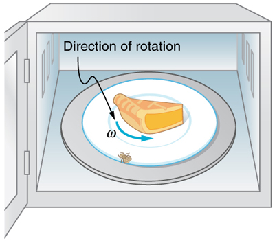
A person decides to use a microwave oven to reheat some lunch. In the process, a fly accidentally flies into the microwave and lands on the outer edge of the rotating plate and remains there. If the plate has a radius of 0.15 m and rotates at 6.0 rpm, calculate the total distance traveled by the fly during a 2.0-min cooking period. (Ignore the start-up and slow-down times.)
First, find the total number of revolutions \(\theta\), and then the linear distance \(x\) traveled. \(\theta = \overline{\omega}\) can be used to find \(\theta\) because \(\overline{\omega}\) is given to be 6.0 rpm.
Entering known values into \(\theta = \overline{\omega}\) gives \[\theta = \overline{\omega} = (6.0 \, rpm)(2.0 \, min) = 12 \, rev.\]
As always, it is necessary to convert revolutions to radians before calculating a linear quantity like \(x\) from an angular quantity like \(\theta\):
Now, using the relationship between \(x\) and \(\theta\), we can determine the distance traveled:
Quite a trip (if it survives)! Note that this distance is the total distance traveled by the fly. Displacement is actually zero for complete revolutions because they bring the fly back to its original position. The distinction between total distance traveled and displacement was first noted inOne-Dimensional Kinematics.
Exercise
Rotational kinematics has many useful relationships, often expressed in equation form. Are these relationships laws of physics or are they simply descriptive? (Hint: the same question applies to linear kinematics.)
Rotational kinematics (just like linear kinematics) is descriptive and does not represent laws of nature. With kinematics, we can describe many things to great precision but kinematics does not consider causes. For example, a large angular acceleration describes a very rapid change in angular velocity without any consideration of its cause.
📖 OpenStax College Physics, Section 10.2. openstax.org · CC BY 4.0
- Understand the relationship between force, mass and acceleration.
- Study the turning effect of force.
- Study the analogy between force and torque, mass and moment of inertia, and linear acceleration and angular acceleration.
If you have ever spun a bike wheel or pushed a merry-go-round, you know that force is needed to change angular velocity as seen in Figure 10.4.1. In fact, your intuition is reliable in predicting many of the factors that are involved. For example, we know that a door opens slowly if we push too close to its hinges. Furthermore, we know that the more massive the door, the more slowly it opens. The first example implies that the farther the force is applied from the pivot, the greater the angular acceleration; another implication is that angular acceleration is inversely proportional to mass. These relationships should seem very similar to the familiar relationships among force, mass, and acceleration embodied in Newton’s second law of motion. There are, in fact, precise rotational analogs to both force and mass.
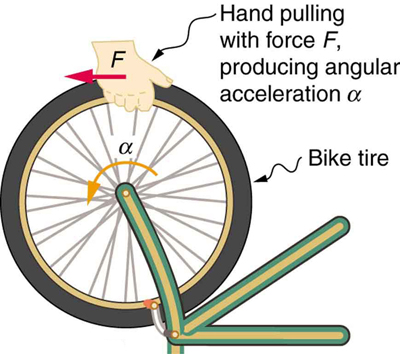
To develop the precise relationship among force, mass, radius, and angular acceleration, consider what happens if we exert a force \(F\) on a point mass \(m\) that is at a distance \(r\) from a pivot point, as shown in Figure 10.4.2. Because the force is perpendicular to \(r\), an accelerationn\(a = frac{F}{m}\) is obtained in the direction of \(F\). We can rearrange this equation such that \(F = ma\) and then look for ways to relate this expression to expressions for rotational quantities. We note that \(a = r\alpha\), and we substitute this expression into \(F = ma\), yielding \[F = mr\alpha.\] Recall thattorqueis the turning effectiveness of a force. In this case, because \(F\) is perpendicular to \(r\), torque is simply \(\tau = Fr\). So, if we multiply both sides of the equation above by \(r\), we get torque on the left-hand side. That is, \[rF = mr^2\alpha\] or \[\tau = mr^2\alpha.\]
This last equation is the rotational analog of Newton’s second law \(F = ma\), where torque is analogous to force, angular acceleration is analogous to translational acceleration, and \(mr^2\) is analogous to mass (or inertia). The quantity \(mr^2\) is called therotational inertiaormoment of inertiaof a point mass \(m\) a distance \(r\) from the center of rotation.
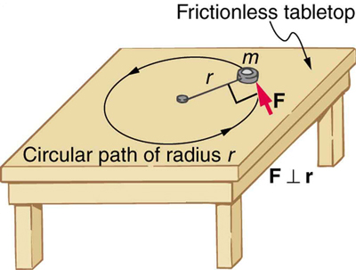
Making Connections: Rotational Motion Dynamics
Dynamics for rotational motion is completely analogous to linear or translational dynamics. Dynamics is concerned with force and mass and their effects on motion. For rotational motion, we will find direct analogs to force and mass that behave just as we would expect from our earlier experiences.
#### Rotational Inertia and Moment of Inertia
Before we can consider the rotation of anything other than a point mass like the one inFigure, we must extend the idea of rotational inertia to all types of objects. To expand our concept of rotational inertia, we define themoment of inertia \(I\)of an object to be the sum of \(mr^2\) for all the point masses of which it is composed. That is, \(I = \sum mr^2\). Here \(I\) is analogous to \(m\) in translational motion. Because of the distance \(r\), the moment of inertia for any object depends on the chosen axis. Actually, calculating \(I\) is beyond the scope of this text except for one simple case—that of a hoop, which has all its mass at the same distance from its axis. A hoop’s moment of inertia around its axis is therefore \(MR^2\), where \(M\) is its total mass and \(R\) its radius. (We use \(M\) and \(R\) for an entire object to distinguish them from \(m\) and \(r\) for point masses.) In all other cases, we must consult Figure 10.4.3 (note that the table is piece of artwork that has shapes as well as formulae) for formulas for \(I\) that have been derived from integration over the continuous body. Note that \(I\) has units of mass multiplied by distance squared \((kg \cdot m^2)\) as we might expect from its definition.
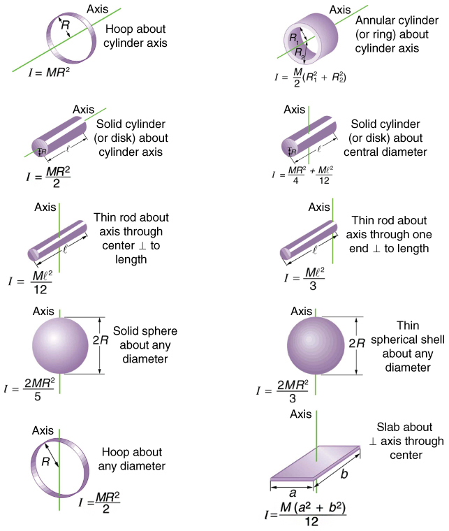
The general relationship among torque, moment of inertia, and angular acceleration is \[net \, \tau = I \alpha\] or \[\alpha = \dfrac{net \, \tau}{I},\] where net \(\tau\) is the total torque from all forces relative to a chosen axis. For simplicity, we will only consider torques exerted by forces in the plane of the rotation. Such torques are either positive or negative and add like ordinary numbers. The relationship in \(\tau = I\alpha\), \(\alpha = \frac{net \, \tau}{I}\) is the rotational analog to Newton’s second law and is very generally applicable. This equation is actually valid foranytorque, applied toanyobject, relative toanyaxis.
As we might expect, the larger the torque is, the larger the angular acceleration is. For example, the harder a child pushes on a merry-go-round, the faster it accelerates. Furthermore, the more massive a merry-go-round, the slower it accelerates for the same torque. The basic relationship between moment of inertia and angular acceleration is that the larger the moment of inertia, the smaller is the angular acceleration. But there is an additional twist. The moment of inertia depends not only on the mass of an object, but also on itsdistributionof mass relative to the axis around which it rotates. For example, it will be much easier to accelerate a merry-go-round full of children if they stand close to its axis than if they all stand at the outer edge. The mass is the same in both cases; but the moment of inertia is much larger when the children are at the edge.
Making Connections: Statics vs. Kinetics
In statics, the net torque is zero, and there is no angular acceleration. In rotational motion, net torque is the cause of angular acceleration, exactly as in Newton’s second law of motion for rotation.
Consider the father pushing a playground merry-go-round inFigure. He exerts a force of 250 N at the edge of the 50.0-kg merry-go-round, which has a 1.50 m radius. Calculate the angular acceleration produced (a) when no one is on the merry-go-round and (b) when an 18.0-kg child sits 1.25 m away from the center. Consider the merry-go-round itself to be a uniform disk with negligible retarding friction.
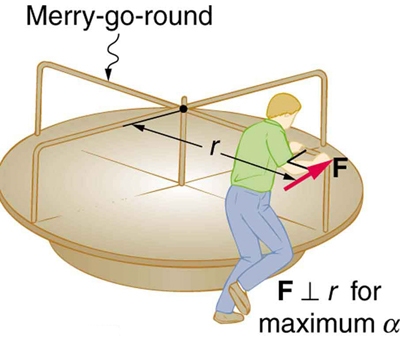
Angular acceleration is given directly by the expression \(\alpha = \frac{net \, \tau}{I}\) \[\alpha = \dfrac{\tau}{I}.\] To solve for \(\alpha\), we must first calculate the torque (which is the same in both cases) and moment of inertia \(I\) (which is greater in the second case). To find the torque, we note that the applied force is perpendicular to the radius and friction is negligible, so that\[\tau = rF \, sin \, \theta = (1.50 \, m)(250 \, N) = 375 \, N \cdot m.\]
The moment of inertia of a solid disk about this axis is given inFigureto be \[\dfrac{1}{2}MR^2,\] where \(M = 50.0 \, kg\) and \(R = 1.50 \, m\), so that
Now, after we substitute the known values, we find the angular acceleration to be
We expect the angular acceleration for the system to be less in this part, because the moment of inertia is greater when the child is on the merry-go-round. To find the total moment of inertia \(I\), we first find the child’s moment of inertia \(I_c\) by considering the child to be equivalent to a point mass at a distance of 1.25 m from the axis. Then,
The total moment of inertia is the sum of moments of inertia of the merry-go-round and the child (about the same axis). To justify this sum to yourself, examine the definition of \(I\):
Substituting known values into the equation for \(\alpha \) gives
The angular acceleration is less when the child is on the merry-go-round than when the merry-go-round is empty, as expected. The angular accelerations found are quite large, partly due to the fact that friction was considered to be negligible. If, for example, the father kept pushing perpendicularly for 2.00 s, he would give the merry-go-round an angular velocity of 13.3 rad/s when it is empty but only 8.89 rad/s when the child is on it. In terms of revolutions per second, these angular velocities are 2.12 rev/s and 1.41 rev/s, respectively. The father would end up running at about 50 km/h in the first case. Summer Olympics, here he comes! Confirmation of these numbers is left as an exercise for the reader.
Exercise :Check Your Understanding
Torque is the analog of force and moment of inertia is the analog of mass. Force and mass are physical quantities that depend on only one factor. For example, mass is related solely to the numbers of atoms of various types in an object. Are torque and moment of inertia similarly simple?
No. Torque depends on three factors: force magnitude, force direction, and point of application. Moment of inertia depends on both mass and its distribution relative to the axis of rotation. So, while the analogies are precise, these rotational quantities depend on more factors
📖 OpenStax College Physics, Section 10.3. openstax.org · CC BY 4.0
- Derive the equation for rotational work.
- Calculate rotational kinetic energy.
- Demonstrate the Law of Conservation of Energy.
In this module, we will learn about work and energy associated with rotational motion. Figure shows a worker using an electric grindstone propelled by a motor. Sparks are flying, and noise and vibration are created as layers of steel are pared from the pole. The stone continues to turn even after the motor is turned off, but it is eventually brought to a stop by friction. Clearly, the motor had to work to get the stone spinning. This work went into heat, light, sound, vibration, and considerablerotational kinetic energy.
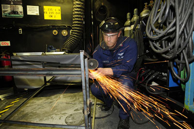
Work must be done to rotate objects such as grindstones or merry-go-rounds. Work was defined inUniform Circular Motion and Gravitationfor translational motion, and we can build on that knowledge when considering work done in rotational motion. The simplest rotational situation is one in which the net force is exerted perpendicular to the radius of a disk (as shown in Figure and remains perpendicular as the disk starts to rotate. The force is parallel to the displacement, and so the net work done is the product of the force times the arc length traveled:
To get torque and other rotational quantities into the equation, we multiply and divide the right-hand side of the equation by \(r\), and gather terms:
We recognize that \(r\) \(net \, F = net \, \tau\) and \(\Delta s/r = \theta\), so that
This equation is the expression for rotational work. It is very similar to the familiar definition of translational work as force multiplied by distance. Here, torque is analogous to force, and angle is analogous to distance. Equation \ref{netw} is valid in general, even though it was derived for a special case. To get an expression for rotational kinetic energy, we must again perform some algebraic manipulations. The first step is to note that
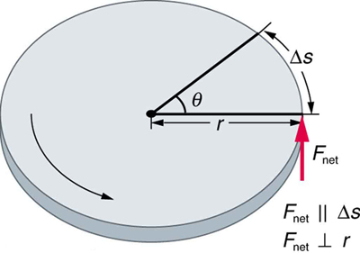
Work and energy in rotational motion are completely analogous to work and energy in translational motion, first presented inUniform Circular Motion and Gravitation.
Now, we solve one of the rotational kinematics equations for \(\alpha \theta\). We start with the equation
Next, we solve for \(\alpha \theta\):
Substituting this into the equation for net \(W\) and gathering terms yields
This equation is thework-energy theoremfor rotational motion only. As you may recall, net work changes the kinetic energy of a system. Through an analogy with translational motion, we define the term \(\left(\frac{1}{2}\right)\omega^2\) to berotational kinetic energy \(KE_{rot}\)for an object with a moment of inertia \(I\) and an angular velocity \(\omega\):
The expression for rotational kinetic energy is exactly analogous to translational kinetic energy, with \(I\) being analogous to \(m\) and \(\omega\) to \(v\). Rotational kinetic energy has important effects. Flywheels, for example, can be used to store large amounts of rotational kinetic energy in a vehicle, as seen in Figure .
Consider a person who spins a large grindstone by placing her hand on its edge and exerting a force through part of a revolution as shown inFigure. In this example, we verify that the work done by the torque she exerts equals the change in rotational energy.
To find the work, we can use Equation \ref{netw}. We have enough information to calculate the torque and are given the rotation angle. In the second part, we can find the final angular velocity using one of the kinematic relationships. In the last part, we can calculate the rotational kinetic energy from its expression in \(KE_{rot} = \frac{1}{2}I\omega^2\).
The net work is expressed in the equation
where net \(\tau\) is the applied force multiplied by the radius \((rF)\) because there is no retarding friction, and the force is perpendicular to \(r\). The angle \(\theta\) is given. Substituting the given values in the equation above yields
Noting that \(1 \, N \cdot m = 1 \, J.\),
Figure . A large grindstone is given a spin by a person grasping its outer edge.
To find \(\omega\) from the given information requires more than one step. We start with the kinematic relationship in the equation
Note that \(\omega_0 = 0\) because we start from rest. Taking the square root of the resulting equation gives \[\omega = (2\alpha \theta)^{1/2}.\] Now we need to find \(\alpha.\) One possibility is \[\alpha = \dfrac{net \, \tau}{I},\]
The formula for the moment of inertia for a disk is found in[link]:
Substituting the values of torque and moment of inertia into the expression for \(\alpha\), we obtain
Now, substitute this value and the given value for \(\theta \) into the above expression for \(\omega\):
The final rotational kinetic energy is \[KE_{rot} = \dfrac{1}{2}I\omega^2.\]
Both \(I\) and \(\omega\) were found above. Thus,
\[KE_{rot} = (0.5)(4.352 \, kg \cdot m^2)(5.42 \, rad/s)^2 = 64.0 \, J.
The final rotational kinetic energy equals the work done by the torque, which confirms that the work done went into rotational kinetic energy. We could, in fact, have used an expression for energy instead of a kinematic relation to solve part (b). We will do this in later examples.
Helicopter pilots are quite familiar with rotational kinetic energy. They know, for example, that a point of no return will be reached if they allow their blades to slow below a critical angular velocity during flight. The blades lose lift, and it is impossible to immediately get the blades spinning fast enough to regain it. Rotational kinetic energy must be supplied to the blades to get them to rotate faster, and enough energy cannot be supplied in time to avoid a crash. Because of weight limitations, helicopter engines are too small to supply both the energy needed for lift and to replenish the rotational kinetic energy of the blades once they have slowed down. The rotational kinetic energy is put into them before takeoff and must not be allowed to drop below this crucial level. One possible way to avoid a crash is to use the gravitational potential energy of the helicopter to replenish the rotational kinetic energy of the blades by losing altitude and aligning the blades so that the helicopter is spun up in the descent. Of course, if the helicopter’s altitude is too low, then there is insufficient time for the blade to regain lift before reaching the ground.
Problem-Solving Strategy for Rotational Energy
A typical small rescue helicopter, similar to the one in Figure , has four blades, each is 4.00 m long and has a mass of 50.0 kg. The blades can be approximated as thin rods that rotate about one end of an axis perpendicular to their length. The helicopter has a total loaded mass of 1000 kg.
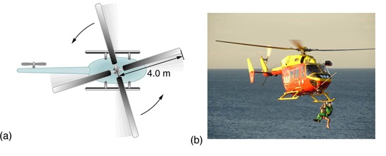
Rotational and translational kinetic energies can be calculated from their definitions. The last part of the problem relates to the idea that energy can change form, in this case from rotational kinetic energy to gravitational potential energy.
The rotational kinetic energy is
We must convert the angular velocity to radians per second and calculate the moment of inertia before we can find \(KE_{rot}\), the angular velocity \(\omega\) is
The moment of inertia of one blade will be that of a thin rod rotated about its end, found in[link]. The total \(I\) is four times this moment of inertia, because there are four blades. Thus,
Entering \(\omega\) and \(I\) into the expression for rotational kinetic energy gives
Translational kinetic energy was defined in Uniform Circular Motion and Gravitation. Entering the given values of mass and velocity, we obtain
To compare kinetic energies, we take the ratio of translational kinetic energy to rotational kinetic energy. This ratio is
At the maximum height, all rotational kinetic energy will have been converted to gravitational energy. To find this height, we equate those two energies:
\[KE_{rot} = PE_{grav}\] or
We now solve for \(h\) and substitute known values into the resulting equation
The ratio of translational energy to rotational kinetic energy is only 0.380. This ratio tells us that most of the kinetic energy of the helicopter is in its spinning blades—something you probably would not suspect. The 53.7 m height to which the helicopter could be raised with the rotational kinetic energy is also impressive, again emphasizing the amount of rotational kinetic energy in the blades.
Conservation of energy includes rotational motion, because rotational kinetic energy is another form of \(KE\).Uniform Circular Motion and Gravitationhas a detailed treatment of conservation of energy.
One of the quality controls in a tomato soup factory consists of rolling filled cans down a ramp. If they roll too fast, the soup is too thin. Why should cans of identical size and mass roll down an incline at different rates? And why should the thickest soup roll the slowest?
The easiest way to answer these questions is to consider energy. Suppose each can starts down the ramp from rest. Each can starting from rest means each starts with the same gravitational potential energy \(PE_{grav}\), which is converted entirely to \(KE\), provided each rolls without slipping. \(KE\) however, can take the form of \(KE_{trans}\) or \(KE_{rot}\), and total \(KE\) is the sum of the two. If a can rolls down a ramp, it puts part of its energy into rotation, leaving less for translation. Thus, the can goes slower than it would if it slid down. Furthermore, the thin soup does not rotate, whereas the thick soup does, because it sticks to the can. The thick soup thus puts more of the can’s original gravitational potential energy into rotation than the thin soup, and the can rolls more slowly, as seen in Figure .
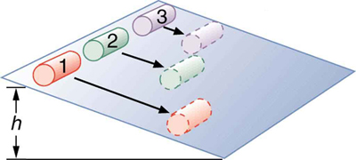
Assuming no losses due to friction, there is only one force doing work—gravity. Therefore the total work done is the change in kinetic energy. As the cans start moving, the potential energy is changing into kinetic energy. Conservation of energy gives
\[PE_{grav} = KE_{trans} + KE_{rot}\] or
So, the initial \(mgh\) is divided between translational kinetic energy and rotational kinetic energy; and the greater \(I\) is, the less energy goes into translation. If the can slides down without friction, then \(\omega = 0\) and all the energy goes into translation; thus, the can goes faster.
Locate several cans each containing different types of food. First, predict which can will win the race down an inclined plane and explain why. See if your prediction is correct. You could also do this experiment by collecting several empty cylindrical containers of the same size and filling them with different materials such as wet or dry sand.
Calculate the final speed of a solid cylinder that rolls down a 2.00-m-high incline. The cylinder starts from rest, has a mass of 0.750 kg, and has a radius of 4.00 cm.
We can solve for the final velocity using conservation of energy, but we must first express rotational quantities in terms of translational quantities to end up with as the only unknown.
Conservation of energy for this situation is written as described above:
Before we can solve for \(v\), we must get an expression for \(I\) from[link]. Because \(v\) and \(\omega\)are related (note here that the cylinder is rolling without slipping), we must also substitute the relationship \(\omega = v/R\) into the expression. These substitutions yield
Interestingly, the cylinder’s radius \(R\) and mass \(m\) cancel, yielding
Solving algebraically, the equation for the final velocity \(v\) gives
Substituting known values into the resulting expression yields
Because \(m\) and \(R\) cancel, the result \(v = (\frac{4}{3}gh)^{1/2}\) is valid for any solid cylinder, implying that all solid cylinders will roll down an incline at the same rate independent of their masses and sizes. (Rolling cylinders down inclines is what Galileo actually did to show that objects fall at the same rate independent of mass.) Note that if the cylinder slid without friction down the incline without rolling, then the entire gravitational potential energy would go into translational kinetic energy. Thus, \(\frac{1}{2}mv^2 = mgh\) and \(v = (2gh)^{1/2}, which is 22% greater than \((4gh/3)^{1/2}\). That is, the cylinder would go faster at the bottom.
Exercise :Analogy of Rotational and Translational KineticEnergy
Is rotational kinetic energy completely analogous to translational kinetic energy? What, if any, are their differences? Give an example of each type of kinetic energy.
Yes, rotational and translational kinetic energy are exact analogs. They both are the energy of motion involved with the coordinated (non-random) movement of mass relative to some reference frame. The only difference between rotational and translational kinetic energy is that translational is straight line motion while rotational is not. An example of both kinetic and translational kinetic energy is found in a bike tire while being ridden down a bike path. The rotational motion of the tire means it has rotational kinetic energy while the movement of the bike along the path means the tire also has translational kinetic energy. If you were to lift the front wheel of the bike and spin it while the bike is stationary, then the wheel would have only rotational kinetic energy relative to the Earth.
📖 OpenStax College Physics, Section 10.4. openstax.org · CC BY 4.0
- Understand the analogy between angular momentum and linear momentum.
- Observe the relationship between torque and angular momentum.
- Apply the law of conservation of angular momentum.
Why does Earth keep on spinning? What started it spinning to begin with? And how does an ice skater manage to spin faster and faster simply by pulling her arms in? Why does she not have to exert a torque to spin faster? Questions like these have answers based in angular momentum, the rotational analog to linear momentum.
By now the pattern is clear—every rotational phenomenon has a direct translational analog. It seems quite reasonable, then, to defineangular momentum \(L\)as \[L = I\omega\]
This equation is an analog to the definition of linear momentum as
Units for linear momentum are \(kg \cdot m/s\), while units for angular momentum are \(kg \cdot m/s^2\). As we would expect, an object that has a large moment of inertia \(I\), such as Earth, has a very large angular momentum. An object that has a large angular velocity \(\omega\), such as a centrifuge, also has a rather large angular momentum.
Angular momentum is completely analogous to linear momentum, first presented inUniform Circular Motion and Gravitation. It has the same implications in terms of carrying rotation forward, and it is conserved when the net external torque is zero. Angular momentum, like linear momentum, is also a property of the atoms and subatomic particles.
What is the angular momentum of the earth?
No information is given in the statement of the problem; so we must look up pertinent data before we can calculate \(L = I\omega\) First, the formula for the moment of inertia of a sphere is
\[I = \dfrac{2MR^2}{5}\] so that
Earth's mass \(M\) is \(5.979 \times 10^{24} \, kg\) and its radius \(R\) is \(6.376 \times 10^6 \, m\). The Earth’s angular velocity \(\omega\) is, of course, exactly one revolution per day, but we must covert \(\omega\) to radians per second to do the calculation in SI units.
Substituting known information into the expression for \(L\) and converting \(\omega\) to radians per second gives
Substituting \(2\pi\) for 1 rev and \(8.64 \times 10^4 \, s\) for 1 day gives
This number is large, demonstrating that Earth, as expected, has a tremendous angular momentum. The answer is approximate, because we have assumed a constant density for Earth in order to estimate its moment of inertia.
When you push a merry-go-round, spin a bike wheel, or open a door, you exert a torque. If the torque you exert is greater than opposing torques, then the rotation accelerates, and angular momentum increases. The greater the net torque, the more rapid the increase in \(L\). The relationship between torque and angular momentum is
This expression is exactly analogous to the relationship between force and linear momentum, \(F = \Delta p/\Delta t\). The equation \(net \, \tau = \Delta L/ \Delta t\) is very fundamental and broadly applicable. It is, in fact, the rotational form of Newton’s second law.
Figure shows a Lazy Susan food tray being rotated by a person in quest of sustenance. Suppose the person exerts a 2.50 N force perpendicular to the lazy Susan’s 0.260-m radius for 0.150 s.
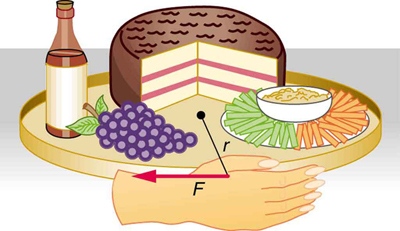
Figure :A partygoer exerts a torque on a lazy Susan to make it rotate. The equation \(net \, \tau = \dfrac{\Delta L}{\Delta t}\) gives the relationship between torque and the angular momentum produced.
We can find the angular momentum by solving \(net \, \tau = \dfrac{\Delta L}{\Delta t}\) for \(\Delta L\), and using the given information to calculate the torque. The final angular momentum equals the change in angular momentum, because the lazy Susan starts from rest. That is, \(\Delta L = L\) To find the final velocity, we must calculate \(\omega\) from the definition of \(L\) in \(L = I\omega\).
Solving \(net \, \tau = \dfrac{\Delta L}{\Delta t}\) for \(\Delta L\) gives
Because the force is perpendicular to \(r\), we see that \(net \, \tau = rF\) so that
The final angular velocity can be calculated from the definition of angular momentum,
Solving for \(\omega\) and substituting the formula for the moment of inertia of a disk into the resulting equation gives
And substituting known values into the preceding equation yields
Note that the imparted angular momentum does not depend on any property of the object but only on torque and time. The final angular velocity is equivalent to one revolution in 8.71 s (determination of the time period is left as an exercise for the reader), which is about right for a lazy Susan.
The person whose leg is shown in kicks his leg by exerting a 2000-N force with his upper leg muscle. The effective perpendicular lever arm is 2.20 cm. Given the moment of inertia of the lower leg is \(1.25 \, kg \cdot m^2\).
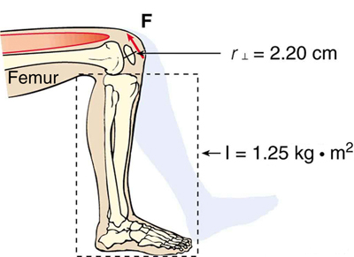
The angular acceleration can be found using the rotational analog to Newton’s second law, or \(\alpha = net \, \tau/I\). The moment of inertia \(I\) is given and the torque can be found easily from the given force and perpendicular lever arm. Once the angular acceleration \(\alpha\) is known, the final angular velocity and rotational kinetic energy can be calculated.
From the rotational analog to Newton’s second law, the angular acceleration \(\alpha\) is
Because the force and the perpendicular lever arm are given and the leg is vertical so that its weight does not create a torque, the net torque is thus
Substituting this value for the torque and the given value for the moment of inertia into the expression for \(\alpha\) gives
The final angular velocity can be calculated from the kinematic expression
because the initial angular velocity is zero. The kinetic energy of rotation is
so it is most convenient to use the value of \(\omega^2\) just found and the given value for the moment of inertia. The kinetic energy is then
These values are reasonable for a person kicking his leg starting from the position shown. The weight of the leg can be neglected in part (a) because it exerts no torque when the center of gravity of the lower leg is directly beneath the pivot in the knee. In part (b), the force exerted by the upper leg is so large that its torque is much greater than that created by the weight of the lower leg as it rotates. The rotational kinetic energy given to the lower leg is enough that it could give a ball a significant velocity by transferring some of this energy in a kick.
Angular momentum, like energy and linear momentum, is conserved. This universally applicable law is another sign of underlying unity in physical laws. Angular momentum is conserved when net external torque is zero, just as linear momentum is conserved when the net external force is zero.
We can now understand why Earth keeps on spinning. As we saw in the previous example, \(\Delta L = (net \, \tau)\Delta t\). This equation means that, to change angular momentum, a torque must act over some period of time. Because Earth has a large angular momentum, a large torque acting over a long time is needed to change its rate of spin. So what external torques are there? Tidal friction exerts torque that is slowing Earth’s rotation, but tens of millions of years must pass before the change is very significant. Recent research indicates the length of the day was 18 h some 900 million years ago. Only the tides exert significant retarding torques on Earth, and so it will continue to spin, although ever more slowly, for many billions of years.
What we have here is, in fact, another conservation law. If the net torque iszero, then angular momentum is constant orconserved. We can see this rigorously by considering \(net \, \tau = \dfrac{\Delta L}{\Delta t}\) for the situation in which the net torque is zero. In that case,
\[net \, \tau = 0\] implying that
If the change in angular momentum \(\Delta L\) is zero, then the angular momentum is constant; thus,
\[L = constant \, (net \, \tau = 0)\] or
These expressions are thelaw of conservation of angular momentum. Conservation laws are as scarce as they are important.
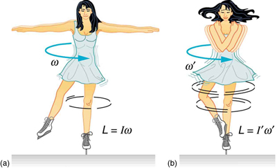
An example of conservation of angular momentum is seen in Figure , in which an ice skater is executing a spin. The net torque on her is very close to zero, because there is relatively little friction between her skates and the ice and because the friction is exerted very close to the pivot point. (Both \(F\) and \(\tau\) are small, and so \(\tau\) is negligibly small.) Consequently, she can spin for quite some time. She can do something else, too. She can increase her rate of spin by pulling her arms and legs in. Why does pulling her arms and legs in increase her rate of spin? The answer is that her angular momentum is constant, so that
Expressing this equation in terms of the moment of inertia,
where the primed quantities refer to conditions after she has pulled in her arms and reduced her moment of inertia. Because \(I'\) is smaller, the angular velocity \(\omega'\) must increase to keep the angular momentum constant. The change can be dramatic, as the following example shows.
Suppose an ice skater, such as the one in Figure , is spinning at 0.800 rev/ s with her arms extended. She has a moment of inertia of \(2.34 \, kg \cdot m^2\) with her arms extended and of \(0.363 \, kg \cdot m^2\) with her arms close to her body. (These moments of inertia are based on reasonable assumptions about a 60.0-kg skater.) (a) What is her angular velocity in revolutions per second after she pulls in her arms? (b) What is her rotational kinetic energy before and after she does this?
In the first part of the problem, we are looking for the skater’s angular velocity \(\omega'\) after she has pulled in her arms. To find this quantity, we use the conservation of angular momentum and note that the moments of inertia and initial angular velocity are given. To find the initial and final kinetic energies, we use the definition of rotational kinetic energy given by
Because torque is negligible (as discussed above), the conservation of angular momentum given in \(I\omega = I'\omega'\) is applicable. Thus,
Solving for \(\omega'\) and substituting known values into the resulting equation gives
Rotational kinetic energy is given by
The initial value is found by substituting known values into the equation and converting the angular velocity to rad/s:
The final rotational kinetic energy is
Substituting known values into this equation gives
In both parts, there is an impressive increase. First, the final angular velocity is large, although most world-class skaters can achieve spin rates about this great. Second, the final kinetic energy is much greater than the initial kinetic energy. The increase in rotational kinetic energy comes from work done by the skater in pulling in her arms. This work is internal work that depletes some of the skater’s food energy.
There are several other examples of objects that increase their rate of spin because something reduced their moment of inertia. Tornadoes are one example. Storm systems that create tornadoes are slowly rotating. When the radius of rotation narrows, even in a local region, angular velocity increases, sometimes to the furious level of a tornado. Earth is another example. Our planet was born from a huge cloud of gas and dust, the rotation of which came from turbulence in an even larger cloud. Gravitational forces caused the cloud to contract, and the rotation rate increased as a result (Figure .
![The first figure shows a cloud of dust and gas,which is in the shape of a distorted circle, rotating in anti-clockwise direction with an angular velocity omega, indicated by a curved black arrow, and having an angular momentum L. The second figure shows an elliptical cloud of dust with the Sun in the middle of it, rotating in anti-clockwise direction with an angular velocity omega dash, indicated by a curved black arrow, and having an angular momentum L. The third figure depicts the Solar System, with the Sun in the middle of it and the various planets revolve around it in their respective elliptical orbits in anti-clockwise direction, which is indicated by arrows. The angular momentum remains L.](images/ch10/fig10-22-the-first-figure-shows-a-cloud-of-dust-a.jpg)
Exercise : Check Your Undestanding
Is angular momentum completely analogous to linear momentum? What, if any, are their differences?
Yes, angular and linear momenta are completely analogous. While they are exact analogs they have different units and are not directly inter-convertible like forms of energy are.
📖 OpenStax College Physics, Section 10.5. openstax.org · CC BY 4.0
- Observe collisions of extended bodies in two dimensions.
- Examine collision at the point of percussion.
Bowling pins are sent flying and spinning when hit by a bowling ball—angular momentum as well as linear momentum and energy have been imparted to the pins. (See Figure . Many collisions involve angular momentum. Cars, for example, may spin and collide on ice or a wet surface. Baseball pitchers throw curves by putting spin on the baseball. A tennis player can put a lot of top spin on the tennis ball which causes it to dive down onto the court once it crosses the net. We now take a brief look at what happens when objects that can rotate collide.
Consider the relatively simple collision shown in Figure , in which a disk strikes and adheres to an initially motionless stick nailed at one end to a frictionless surface. After the collision, the two rotate about the nail. There is an unbalanced external force on the system at the nail. This force exerts no torque because its lever arm is zero. Angular momentum is therefore conserved in the collision. Kinetic energy is not conserved, because the collision is inelastic. It is possible that momentum is not conserved either because the force at the nail may have a component in the direction of the disk’s initial velocity. Let us examine a case of rotation in a collision in Example .
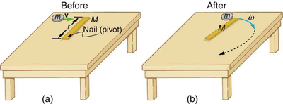
Suppose the disk in Figure has a mass of 50.0 g and an initial velocity of 30.0 m/s when it strikes the stick that is 1.20 m long and 2.00 kg.
We can answer the first question using conservation of angular momentum as noted. Because angular momentum is \(I\omega\), we can solve for angular velocity.
Conservation of angular momentum states
where primed quantities stand for conditions after the collision and both momenta are calculated relative to the pivot point. The initial angular momentum of the system of stick-disk is that of the disk just before it strikes the stick. That is,
where \(I\) is the moment of inertia of the disk and \(\omega\) is its angular velocity around the pivot point. Now, \(I = mr^2\) (taking the disk to be approximately a point mass) and \(\omega = v/r\), so that
It is \(\omega'\) that we wish to find. Conservation of angular momentum gives
Rearranging the equation yields
where \(I'\) is the moment of inertia of the stick and disk stuck together, which is the sum of their individual moments of inertia about the nail.[link]gives the formula for a rod rotating around one end to be \(I = Mr^2/3\). Thus,
Entering known values in this equation yields,
The value of \(I'\) is now entered into the expression for \(\omega'\), which yields
The kinetic energy before the collision is the incoming disk’s translational kinetic energy, and after the collision, it is the rotational kinetic energy of the two stuck together.
First, we calculate the translational kinetic energy by entering given values for the mass and speed of the incoming disk.
After the collision, the rotational kinetic energy can be found because we now know the final angular velocity and the final moment of inertia. Thus, entering the values into the rotational kinetic energy equation gives
The linear momentum before the collision is that of the disk. After the collision, it is the sum of the disk’s momentum and that of the center of mass of the stick.
Before the collision, then, linear momentum is
After the collision, the disk and the stick’s center of mass move in the same direction. The total linear momentum is that of the disk moving at a new velocity \(v' = r\omega'\) plus that of the stick’s center of mass,
which moves at half this speed because \(v_{CM} = \left(\frac{r}{2}\right)\omega' = \frac{v'}{2}\). Thus,
Gathering similar terms in the equation yields,
\[p' = \left(m + \dfrac{M}{2}\right)v'\] so that
Substituting known values into the equation,
First note that the kinetic energy is less after the collision, as predicted, because the collision is inelastic. More surprising is that the momentum after the collision is actually greater than before the collision. This result can be understood if you consider how the nail affects the stick and vice versa. Apparently, the stick pushes backward on the nail when first struck by the disk. The nail’s reaction (consistent with Newton’s third law) is to push forward on the stick, imparting momentum to it in the same direction in which the disk was initially moving, thereby increasing the momentum of the system.
The above example has other implications. For example, what would happen if the disk hit very close to the nail? Obviously, a force would be exerted on the nail in the forward direction. So, when the stick is struck at the end farthest from the nail, a backward force is exerted on the nail, and when it is hit at the end nearest the nail, a forward force is exerted on the nail. Thus, striking it at a certain point in between produces no force on the nail. This intermediate point is known as thepercussion point.
An analogous situation occurs in tennis as seen in Figure . If you hit a ball with the end of your racquet, the handle is pulled away from your hand. If you hit a ball much farther down, for example, on the shaft of the racquet, the handle is pushed into your palm. And if you hit the ball at the racquet’s percussion point (what some people call the “sweet spot”), then little ornoforce is exerted on your hand, and there is less vibration, reducing chances of a tennis elbow. The same effect occurs for a baseball bat.
![In figure a, a disk hitting a stick is compared to a tennis ball being hit by a racquet. When the ball strikes the racquet near the end with a force denoted by f ball as shown by the direction of the arrow, a backward force, f hand is exerted on the hand, In figure b, when the racquet is struck much farther down by a force F ball, a forward force, f hand is exerted on the hand as shown by the arrows. In figure (c), when the racquet is struck by the ball with a force f ball at the percussion point, no force is delivered to the hand. This implies that f hand is equal to zero.](images/ch10/fig10-25-in-figure-a-a-disk-hitting-a-stick-is-co.jpg)
Exercise
Is rotational kinetic energy a vector? Justify your answer.
No, energy is always scalar whether motion is involved or not. No form of energy has a direction in space and you can see that rotational kinetic energy does not depend on the direction of motion just as linear kinetic energy is independent of the direction of motion.
📖 OpenStax College Physics, Section 10.6. openstax.org · CC BY 4.0
- Describe the right-hand rule to find the direction of angular velocity, momentum, and torque.
- Explain the gyroscopic effect.
- Study how Earth acts like a gigantic gyroscope.
Angular momentum is a vector and, therefore,has direction as well as magnitude. Torque affects both the direction and the magnitude of angular momentum. What is the direction of the angular momentum of a rotating object like the disk inFigure? The figure shows theright-hand ruleused to find the direction of both angular momentum and angular velocity. Both \(L\) and \(\omega\) are vectors—each has direction and magnitude. Both can be represented by arrows. The right-hand rule defines both to be perpendicular to the plane of rotation in the direction shown. Because angular momentum is related to angular velocity by \(L = I\omega\), the direction of \(L\) is the same as the direction of \(\omega\). Notice in the figure that both point along the axis of rotation.
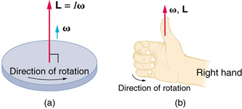
Now, recall that torque changes angular momentum as expressed by
This equation means that the direction of \(\Delta L\) is the same as the direction of the torque \(\tau\) that creates it. This result is illustrated inFigure, which shows the direction of torque and the angular momentum it creates.
Let us now consider a bicycle wheel with a couple of handles attached to it, as shown inFigure. (This device is popular in demonstrations among physicists, because it does unexpected things.) With the wheel rotating as shown, its angular momentum is to the woman's left. Suppose the person holding the wheel tries to rotate it as in the figure. Her natural expectation is that the wheel will rotate in the direction she pushes it—but what happens is quite different. The forces exerted create a torque that is horizontal toward the person, as shown inFigure(a). This torque creates a change in angular momentum \(L\) in the same direction, perpendicular to the original angular momentum \(L\), thus changing the direction of \(L\) but not the magnitude of \(L\).Figureshows how \(\Delta L\) and \(L\) add, giving a new angular momentum with direction that is inclined more toward the person than before. The axis of the wheel has thus movedperpendicular to the forces exerted on it, instead of in the expected direction.
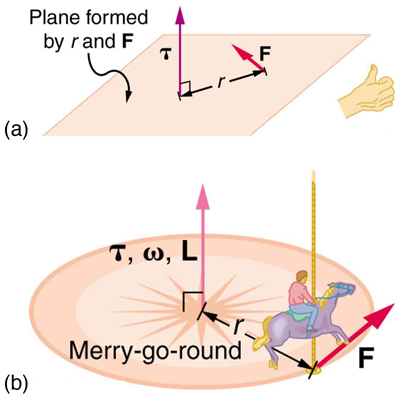
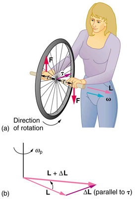
This same logic explains the behavior of gyroscopes.Figureshows the two forces acting on a spinning gyroscope. The torque produced is perpendicular to the angular momentum, thus the direction of the torque is changed, but not its magnitude. The gyroscopeprecessesaround a vertical axis, since the torque is always horizontal and perpendicular to \(L\). If the gyroscope isnotspinning, it acquires angular momentum in the direction of the torque (\( L = \Delta L\)), and it rotates around a horizontal axis, falling over just as we would expect.
Earth itself acts like a gigantic gyroscope. Its angular momentum is along its axis and points at Polaris, the North Star. But Earth is slowly precessing (once in about 26,000 years) due to the torque of the Sun and the Moon on its nonspherical shape.
![In figure a, the gyroscope is rotating in counter clockwise direction. The weight of the gyroscope is acting downward. The supportive force is acting at the base. The line of action of the weight and supportive force are different. The torque is acting along the radius of the horizontal circular part of gyroscope. In figure b, the two vectors L and L plus delta L are shown. The vectors start from a point at the bottom of the figure and terminate at two points on a horizontal dotted circle, directed in counter clockwise direction, at the top of the figure. Another vector delta L starts from the head of vector L and terminates at the head of vector L plus delta L.](images/ch10/fig10-29-in-figure-a-the-gyroscope-is-rotating-in.jpg)
Exercise
Rotational kinetic energy is associated with angular momentum? Does that mean that rotational kinetic energy is a vector?
No, energy is always a scalar whether motion is involved or not. No form of energy has a direction in space and you can see that rotational kinetic energy does not depend on the direction of motion just as linear kinetic energy is independent of the direction of motion.
📖 OpenStax College Physics, Section 10.7. openstax.org · CC BY 4.0
| Section | Title |
|---|---|
| 10.1 | 10.1: Angular Acceleration |
| 10.2 | 10.2: Kinematics of Rotational Motion |
| 10.3 | 10.3: Dynamics of Rotational Motion - Rotational Inertia |
| 10.4 | 10.4: Rotational Kinetic Energy - Work and Energy Revisited |
| 10.5 | 10.5: Angular Momentum and Its Conservation |
| 10.6 | 10.6: Collisions of Extended Bodies in Two Dimensions |
| 10.7 | 10.7: Gyroscopic Effects- Vector Aspects of Angular Momentum |